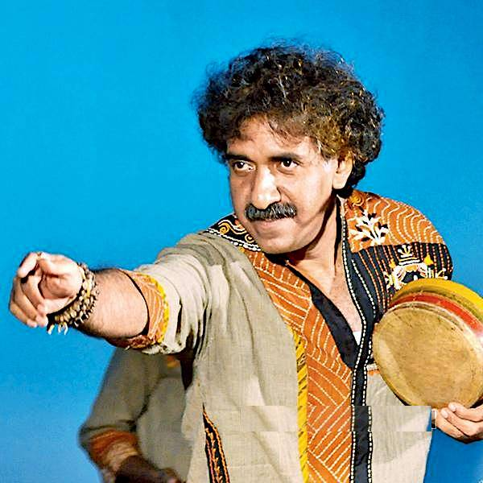

<ion-view view-title="Home">
    <ion-content>

        <ion-slides>
            <ion-slide-page>
                
                <div class="box blue company-header"><h3>North American Bengali Conference 2018</h3></div>

                
            </ion-slide-page>
            <ion-slide-page>
                
                <div class="box blue company-header"><h3>North American Bengali Conference 2018</h3></div>
                
                <h5>We mourn the loss of a legend of Bengali Folk Music, Kalika Prasad.</h5>
                <p>Born in Silchar in Assam, he made a name for himself in the Bengali music industry by popularizing rural folk traditions. Over the years, he had done a significant amount of research on folk songs of Eastern India and delved into the socio-economic context in which they evolved. Apart from being a folk singer, he was also an esteemed radio artist. More recently, he had also lent his voice to popular Bengali movies like Bhuban Majhi (2017), Jaatishwar (2014) and Moner Manush (2010). He was also part of a folk band called Dohar, which had as its objective the popularization of the rustic songs of Bengal and North East India among the urban masses.</p>
                <h5>May he rest in peace.</h5>
            </ion-slide-page>
            <ion-slide-page>
                
                <div class="box blue company-header"><h3>North American Bengali Conference 2018</h3></div>
                <div class="box pink"><h5>Sunday Grand Finale</h5></div>
                
            </ion-slide-page>
        </ion-slides>

        <!--<ion-slides pager>
            <ion-slide ng-repeat="slide in homeSlides.slides">
                <ion-toolbar>
                    <ion-buttons end>
                        <button ion-button color="primary">Skip</button>
                    </ion-buttons>
                </ion-toolbar>
                
                <h2 class="slide-title" [innerHTML]="slide.title"></h2>
                <p [innerHTML]="slide.description"></p>
            </ion-slide>
            <ion-slide>
                <ion-toolbar>
                </ion-toolbar>
                
                <h2 class="slide-title">Ready to Play?</h2>
                <button ion-button large clear icon-right color="primary">
                    Continue
                    <ion-icon name="arrow-forward"></ion-icon>
                </button>
            </ion-slide>
        </ion-slides>-->

    </ion-content>
</ion-view>
